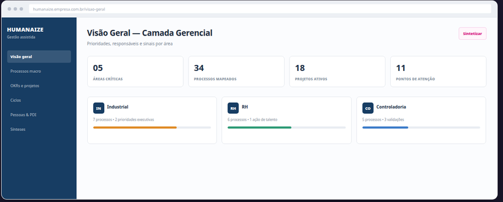
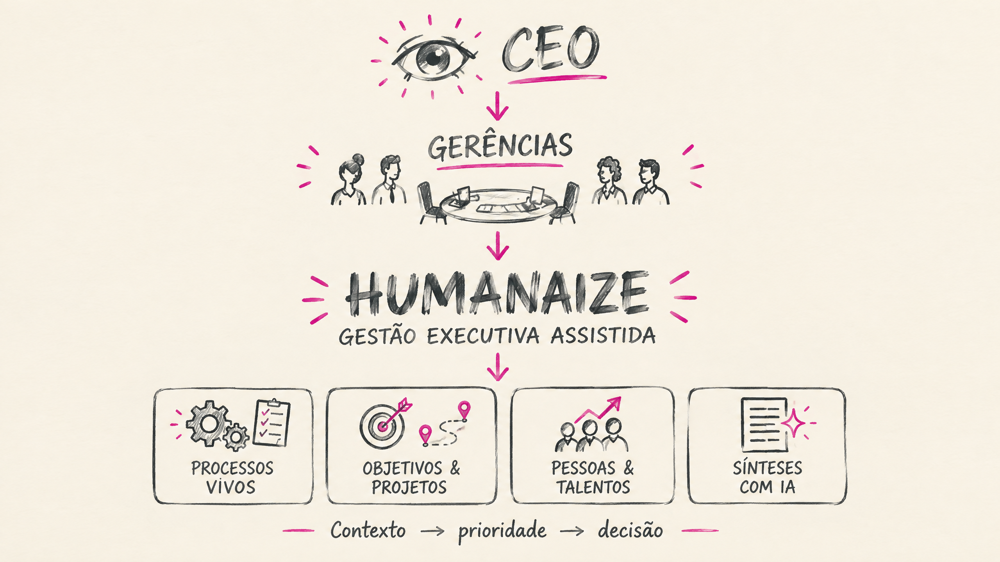
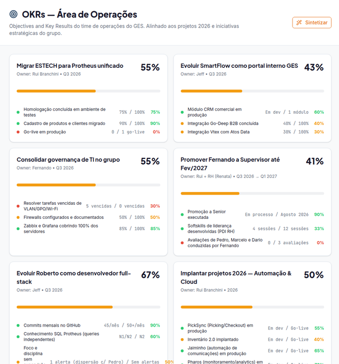
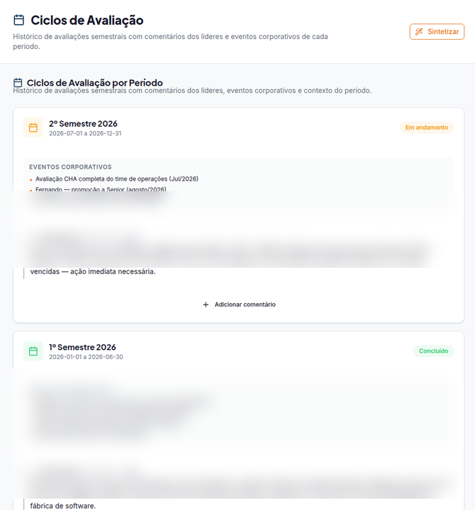

Mapa de processos e job descriptions vivos
Processos macro, subprocessos, atividades, tarefas, sistemas, responsáveis, frequência e indicadores em uma matriz navegável e atualizável.
Humanaize é uma plataforma de gestão organizacional que conecta processos, pessoas, metas e decisões. Para a SCHÜTZ VASITEX, a proposta é começar pela camada executiva–gerencial e adaptar o produto à cultura, aos sistemas e às rotinas da indústria.
Processos críticos, planos, projetos e sinais de pessoas consolidados em uma rotina de decisão.
A SCHÜTZ VASITEX atua no mercado brasileiro de embalagens industriais, com produção, limpeza, recondicionamento, reciclagem e logística reversa. Seu portfólio combina IBCs, tambores, bombonas e serviços orientados a ciclo de vida e sustentabilidade.
A solicitação inicial indica uma oportunidade de curto prazo: reduzir a perda de contexto entre o C-level e as gerências de Controladoria, RH, Fiscal, Industrial e Comercial. A proposta não presume causa nem solução antes do diagnóstico; organiza uma forma objetiva de transformar prioridades em processos, ritos, evidências e decisões.
A plataforma se conecta à cadência de decisão e usa as ferramentas já existentes como fontes de contexto.
Vocabulário, indicadores, responsabilidades e políticas são desenhados para a realidade da SCHÜTZ VASITEX.
O primeiro ciclo ataca a camada CEO–gerências e deixa uma base segura para expansão posterior.
A versão atual está em operação no GES. Para a SCHÜTZ VASITEX, cada módulo será configurado conforme a cultura industrial, as políticas de RH e a prioridade do CEO. Os controles são orientativos: simplificam preenchimento, atualização e preparação de ritos; não substituem julgamento gerencial.
Processos macro, subprocessos, atividades, tarefas, sistemas, responsáveis, frequência e indicadores em uma matriz navegável e atualizável.
Critérios por função, ciclos temporais, contexto do período e evolução do desempenho vinculados às atribuições combinadas.
Objetivos, resultados-chave, responsáveis, prioridades e acompanhamento de iniciativas que atravessam áreas.
Histórico comportamental, leituras por pessoa e área e inventário protegido; PDI e carreira corporativa são frentes de consolidação.
Talentos, potencial, desempenho e fatores competitivos organizados com evidências; a decisão final permanece documentada pela liderança.
Já há cargos, faixas e linha do tempo de salário, bônus e comissão com acesso confidencial. Regras, elegibilidade e histórico de PLR serão desenhados conforme política da SCHÜTZ VASITEX.
Sketchnotes handdraw, Asana, Trello, Planner, sistemas corporativos, trilhas, indicadores e painéis específicos da operação industrial.
Além dos módulos atuais, o Humanaize prevê três frentes de adaptação. Elas aparecem aqui para explicitar a visão de produto — não como funcionalidades já entregues para a SCHÜTZ VASITEX. Clique para ver a intenção de cada etapa e suas condicionantes.
Além dos painéis de processos, objetivos e pessoas, o Humanaize transforma conteúdos densos em sínteses visuais handdraw, disponíveis ao líder junto com o relatório de origem. É uma leitura rápida, estruturada e rastreável para ritos executivos.
A tela e a síntese abaixo usam dados demonstrativos, sem informações da SCHÜTZ VASITEX ou dados internos identificáveis do GES.


Os exemplos abaixo são telas do Humanaize em operação, com dados internos protegidos quando necessário. Para a SCHÜTZ VASITEX, o conteúdo, vocabulário, regras de acesso e indicadores serão adaptados à realidade industrial.

Estrutura processos, atividades, tarefas, responsáveis, sistemas e evidências para atualização contínua.

Orienta o preenchimento de resultados-chave, avanço, responsáveis, sinais de risco e prioridades de acompanhamento.

Registra o contexto do período, eventos relevantes e comentários gerenciais para evitar avaliações sem memória organizacional.

Traduz o perfil em pontos fortes, desenvolvimento e dicas de comunicação para uma conversa de feedback mais efetiva.
Entender o que o CEO precisa enxergar, quais ritos existem, onde há fricção entre áreas e quais informações já vivem nos sistemas atuais.
Configurar processos críticos, rotinas, responsáveis, metas, projetos e evidências para a primeira camada de controle.
Conduzir o primeiro recorte com líderes definidos, revisar qualidade das informações e ajustar a experiência à cultura da organização.
Decidir, a partir da evidência do primeiro recorte, quando e como ampliar para outros departamentos, plantas, níveis e jornadas de pessoas.
A IA pode organizar processos, sintetizar ciclos, preparar perguntas e apontar lacunas. Aprovação, avaliação e decisão continuam humanas.
Informações comportamentais, de desempenho e remuneração exigem perfis de acesso, trilhas de auditoria e desenho compatível com LGPD.
Asana, Trello, Planner e sistemas corporativos só entram quando a fonte, o dado, o responsável e o uso gerencial forem explicitamente definidos.
Antes de dimensionar setup, adaptação, desenvolvimento ou modelo de fornecimento, a Optivio propõe validar o primeiro recorte de gestão e seus critérios de sucesso.